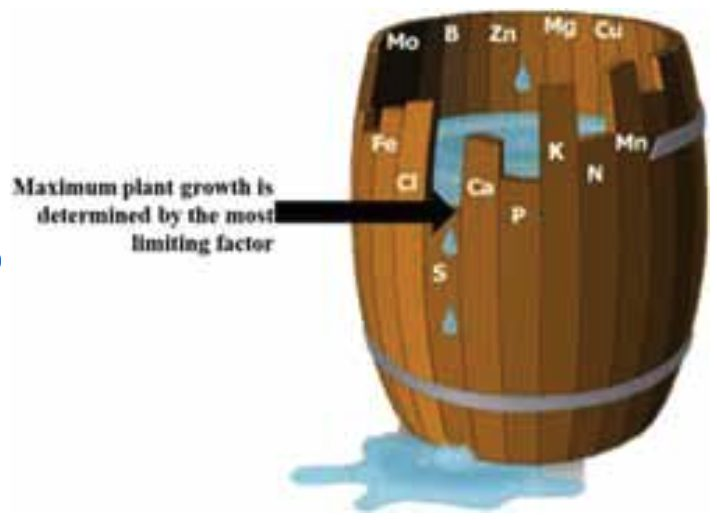
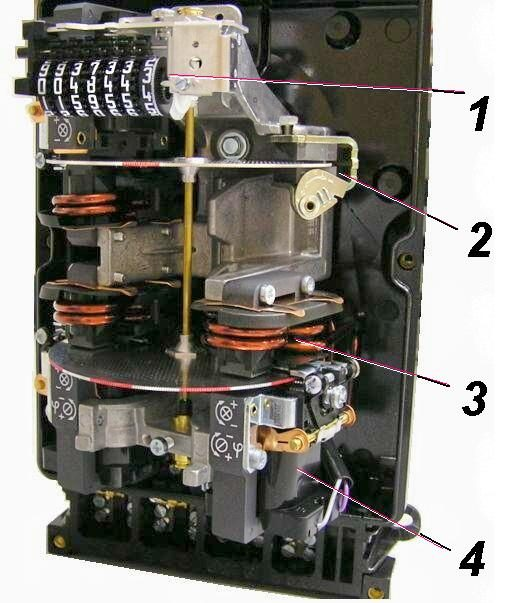

multiply by three
… guess, and then multiply by three.
（估完）再乘以三
Forrester 估延迟的经验法则。作者在括号里补一句：估写一本书要多久，也灵。
第 4 章列出系统让人吃惊的六种方式，这一页是后三种，都出在增长和决策里。拼命加一样东西，产出不动，因为卡在另一样上，而增长又会让卡住的那样换掉。动作和效果之间隔着时间，于是做过头或做不够。最好玩的是有限理性：每个人在自己的位置上都做得合理，加起来却是谁都不想要的结果，换个人坐上去，多半照旧。读的时候盯住一个问题：毛病出在人身上，还是出在他看得见的信息上？
第 4 章前半（04a）讲了前三种意外：只看事件、拿线性思维看非线性的世界、边界画错，错都出在看法上。这一页讲后三种，错出在增长和决策里：§5 限制因素，§6 延迟，§7 有限理性。六种是一张清单，这一页的情境题会把六种混着出。§7 是本章最长的一节，她在那里预告：第 5 章的陷阱，是可能让有限理性酿成灾难的几种常见结构。
别被带歪：§7 拿斯坦福监狱实验当旁证，说人一放进角色就会照角色行事。2019 年发表的档案研究发现，扮狱警的学生事先得到过怎样对待囚犯的具体指示，这个实验撑不起那个结论。她的论点另有模拟游戏和日常例子，不全靠它。
一个人在他的位置上做了蠢事，换个人坐上去，会好吗？
读的时候带着这几个问题，读完回来对照「检查一下理解」。
这一页是原书和译本第 4 章的后三节。粗体是本站给的节名，后面是档和译本字数；下面一行是译本的小标题和这一节在译本电子书里开头的几个字（搜它就能跳过去），再下面是英文原书的小标题和开头几个词，翻纸书用。读完打个勾。
先把这一页用到的两个概念用书外的例子讲一遍。§6 的延迟在第 2 章讲过，这里不另立一块，见调节回路里的延迟和振荡；和本页限制因素容易混的非线性、边界，见 04a 的非线性和边界。
一样东西要靠好几样投入才能长，某一刻卡住它的，是最缺的那一样。周末做一桌菜：菜、锅、人手都够，只有一个灶眼，这顿饭什么时候上桌就看灶眼，再多买菜也快不了。这条规律书里叫译本：「最小因子定律」，中文里更熟的说法是「木桶的短板」。书里归给李比希，其实他的同胞 Sprengel 1828 年就提出过，李比希把它推广开了。
和木桶比喻不同，书里强调限制会换：借个电磁炉补上灶眼，卡点就移到洗碗池或人手上。增长本身也在改变限制：把那样东西用掉、让它更紧，或者把它放宽。和非线性分开：非线性是同一样投入的效果曲线自己弯了；限制因素是这一样加多少都没用，因为缺的是另一样，补上那一样，这一样又管用了。

在这一页：§5 的两张清单之后是李比希和 Forrester 的公司模型。读每个例子都问：现在最缺的是什么，补上以后下一个是什么？
人依据手上的信息做决定，这些决定在他那个位置上相当合理；可信息不全、来得晚，系统里越远的部分越看不清。春运抢票：每个人多开几个抢票软件、买加速包，都很合理；人人如此，请求总量暴涨，每次请求抢到票的机会更小。书后术语表从另一面定义它：在系统一部分里说得通、放到更大的系统里就说不通的逻辑。
Simon 还给了一个词：满意即可（satisficing），找到够好的选项就停，不去翻遍所有可能。订外卖翻三页就下单，是正常人的做法。译本这个词译得会读歪，见勘误。和第 3 章的次优化分开：次优化是子系统的目标压过了整体；有限理性说的是每个人只看得见自己那一块。所以药方在信息和激励上，换人多半不管用。
在这一页：§7 先讲概念，再做换位子的思想实验。荷兰电表的插话是「改信息」最短的例子。

读英文原书时值得停一下的词和句：熟词生义、Meadows 的口语和比喻。灰色斜体是原句里连续的几个词，在英文电子书里搜它就能找到；标「每个字都认识」的，是每个词都眼熟、合起来意思却变了的，最容易读错。点「记下」收进词本。
对着译本读这三节时，下面这些地方会把人读歪。方框里是译本的原句，在译本电子书里搜它就能找到；灰色斜体是英文原书那一处。只收意思错了、反了、漏了的，措辞上的出入不收。全书的勘误汇总在译本勘误。
… dozens of minor nutrients
译本：「各种微生物」
原文这一项是几十种微量养分，用量少但缺不得；土壤里的微生物群落是下一项。译本把这一项写成微生物，下一项又写成土壤和有机质，微量养分就从清单里没了，而 §5 讲的正是缺一样都不行。
… Companies can’t keep going without energy
译本：「不管有多少客户，没有资本」
原文：公司没有能源，客户再多也撑不下去；没有客户，能源再多也撑不下去。两样互为限制。译本把能源换成资本，下一句也跟着换了。同段开头的俗语「巧妇难为无米之炊」是译本加的。
… know what to put in artificial fertilizer
译本：「可以确定最佳的施肥量」
原文的疑问在配方上：农学家认出了好土里的许多养分，就以为知道化肥该放什么，会不会还有没认出来的必需养分？化肥会不会伤了土里的微生物、反过来成了限制？译本变成施多少的问题，「限制因素可能根本没被认出来」这层意思没了。
… most economic production functions keep track
译本：「大多数经济发展措施」
production function 是经济学里描述投入和产出关系的模型。作者说经济学兴起时最缺的是资本和劳动力，所以这些模型多只算这两样；经济相对生态系统变大以后，限制转到干净的水和空气、堆垃圾的地方。译本把转变的原因写成资本和劳动力的瓶颈被突破，原文没有。
… around every growing plant, child, epidemic
译本：「对于每一个工厂」
原文列的是正在长的东西：植物、孩子、流行病、新产品……同段下一句接着讲植物和土壤。plant 译成工厂，这一串就不再都是「会长大的东西」。
… growth itself depletes or enhances limits …
译本：「如果增长变缓或者约束变强」
原文：要看出增长本身会用掉限制或放宽限制，所以谁是限制因素会变。译本写成增长变缓、约束变强说明限制因素在变，把原因换成了征兆，这一节最要紧的一句没了。段末也倒了：原文是把注意力移到下一个限制因素上，才算真正理解和掌控增长。
… They can be self-imposed. If they aren’t, …
译本：「有些限制是自发的」
原文是一个条件句：增长的限制可以由自己定下；自己不定，系统就会替你定。译本写成有些是自发的、有些是系统施加的，像是两类限制的分类，丢了「选择在你」这层意思。同节的页边金句也这样译。
… had something almost communist in it
译本：「几乎已经和理想主义者一样了」
Havel 说，自己急着重建民主，这份急躁里竟有点共产主义的味道，更一般地说是理性主义（rationalist）的味道：想按设计推着历史走。他反对了一辈子的东西在自己身上冒出来，这是自省。译成「理想主义者」，分量就没了。
… responding to delayed information, or responding with
译本：「使反馈延迟更长或更短一些」
原文：决策点依据的是滞后的信息，或者反应本身滞后，决策就会偏，动作不是太多就是太少。译本写成「使延迟更长或更短，决策就可能偏」，像是说改延迟会出错，和同段「延迟常是敏感的杠杆点」打架。
… and collapses are always caused by delays.
译本：「也经常是由时间延迟所引起的」
原文是作者最硬的断言之一，「总是」，译本弱成「经常」。同句 overshoot 译成「矫枉过正」也不妥，那是纠偏纠过头；本站统一叫「过冲」，指冲过目标或承载力。这句话站不站得住，见「本站怎么看」。
… longer time than the politicians foresaw.
译本：「痛苦期要远远长于政治制度的变革」
原文的比较对象是政客的预期：西德吸收东德带来的困苦，比政客预见的更多、更久。这是「人总低估事情要花多久」的例子。译本拿它和政治制度变革的快慢比，延迟出乎意料这一层没了。
… will not be fully revealed for …
译本：「一两代人都难以修复」
原文说的正是延迟：海洋对升温的反应要几十年，人类排放已经引起的气候变化，要过一两代人才会完全显现。译本写成修复要多久，这一段举例的用意就没了。
… have more babies than they can support.
译本：「却比富人生育和抚养着更多的孩子」
原文没有和富人比，说的是生的孩子多过自己养得起的，这是「各自合理、加起来没人想要」的例子之一。同段采尔马特（Zermatt）是瑞士的滑雪小镇，不是冰川。
… We are not omniscient, rational optimizers
译本：「理性的乐观主义者」
optimizer 指要在所有选项里挑出最好那个的人，和乐观无关。Simon 的对照是：人不是全知、理性、求最优的决策者，而是满意即可的人。
… before moving on to the next decision.
译本：「总是试图最大程度地满足当前的需求」
satisficing 由 satisfy（满足）和 suffice（足够）合成：把需要满足到够好就停，转向下一个决定。译本写成最大程度地满足，正好反了；前面把 satisficers 译成「自足自乐者」，读着又像知足常乐。这是有限理性的核心词。
… make no economic or ecological sense.
译本：「受到经济或生态等方面的影响」
原文：我们给未来打的折扣，在经济上、生态上都说不通，也就是把未来看得太轻。译本说成价值判断受经济生态影响，批评成了中性描述。同段原文是根本不让不爱听的消息进来，译本成了「不全盘接受」。
… cause bounded rationality to lead to disaster.
译本：「它们可能导致有限理性」
原文：下一章要讲的常见结构，会让有限理性走向灾难。有限理性是人的常态，不是结构造出来的；结构决定它酿不酿祸。译本把方向倒了，读来像上瘾、军备竞赛是有限理性的来源。
… put in the place of someone whose
译本：「来到一个完全陌生的社会之中」
原文是角色对调的设想：把你放到你一向看不懂其行为的那个人的位置上，比如批评政府的人进了政府。译本写成去陌生社会。段末作者的愿望（但愿这种对调多多发生，好让大家开阔眼界）也被改成了问句。
… but it’s distinctly unlikely.
译本：「但这无疑是不可能发生的」
原文：到了新位置，你也可能记得从另一边看的样子，带来改变系统的创新，只是很不可能。译本说成绝不可能，把作者留的口子封死了。同段「斤斤计较」那句是译本加的，原文是你会看到多生孩子的短期理性、希望、机会和必要。
… they feather their own nests …
译本：「他们会精心装饰自己的爱巢」
这是习语，鸟往窝里垫羽毛，比喻借位置捞好处。模拟游戏里扮上层的学生会给自己捞好处，和扮底层的冷漠或反叛对照。译本照字面译，这一句的意思就没了。
… is not likely to make much difference.
译本：「如果换成另外一个人，结果仍是相同的」
原文：把一个人从有限理性的位置上换下来，换另一个人上去，不太可能有多大差别。是「不太可能」「差别不大」，译本说成结果必然相同，比作者说得满。
… with even slight enlargement of bounded rationality
译本：「只要稍微强化一下有限理性」
原文：哪怕把有限理性的边界稍微放宽一点，也就是给人更好、更全、更及时的信息，行为就能很快改变。「强化有限理性」读着像让理性更受限，方向反了。
… make fairly uninhibited and locally rational decisions.
译本：「公平的、不受限制的、理性的决策」
fairly 是「相当」，不是「公平」；还丢了 locally（局部），这正是本节的要点：市场让每个人在自己那块做出合理的决定，可这些决定纠正不了整体的倾向。同段最后一项原文是冲过可持续的承载力，译本成了「产能的波动」。
… may or may not lead to decisions
译本：「这可能会产生促进系统整体福利的决策」
原文：每个角色的有限理性，可能、也可能不会带来增进整体福利的决定；不会的话，换上新角色也改善不了系统。译本丢了「也可能不会」，读来成了一句好话，下一句「如果不能」就没了着落。
下面是作者在这三节里的主张，本站按主张之间的逻辑重排，不按原书顺序；每条后面是节号，拿不准就回书里那一节再读一遍。
她借李比希的最小因子定律：缺磷时氮再多也没用。富国给穷国送资本和技术却不见效，可能缺的不是这两样。洞见更在于增长本身会消耗或放宽限制：Forrester 的公司模型里，产能、员工技能、订单系统轮流成了瓶颈。
§5盯住下一个限制因素不是永续增长的秘方，有限环境里的物理实体不可能永远长下去。产品够好，订单会涌来，直到某个限制让它变差或变贵；城市够好，人会涌来，直到某个限制把它拉下来。所以真正的选择是在什么限制里生活。
§5There always will be limits to growth. They can be self-imposed. If they aren’t, they will be system-imposed.— §5。本站译：增长总有极限。极限可以自己定；不自己定，系统就会替你定。
每个存量都是一个延迟，多数流量也有延迟；事情要花多久，人们一次次估短，Forrester 的办法是估完再乘以三。决策依据滞后的信息或反应滞后，动作就过多或过少；反应太快，又会放大短期波动。她断言过冲、振荡、崩溃「总是」由延迟造成，反馈延迟长时必须有预见。
§6她用 Simon 的「有限理性」解释游客挤坏海滩、渔民捕光自己的鱼：人依据手上的信息做出相当合理的决定，但信息不全、滞后；人也不求最优，找到够好的就停。她还转述行为科学家：连手上的信息也解读不好。斯密那套个人求最优、加起来就最好的假设，她认为经不起证据。
§7坐到别人的位子上，你多半也照那个位子的信息和激励行事；理解这点不是开脱，责怪个人很少有用。要改的是信息、激励、目标和约束，有时一点更及时的信息就够，荷兰电表是她听来的例子。她说自由市场有些方面自我调节，有些方面不是。
§7Blaming the individual rarely helps create a more desirable outcome.— §7。本站译：责怪个人，很少能带来更好的结果。
合起来：这三节的意外都出在增长和决策里：卡住增长的那样东西会换，动作和效果之间隔着时间，每个人只看得见自己那一块。药方也一致：往前看一步，找下一个限制，给长延迟留出预见，把人看不见的信息送到他眼前。
这一章合起来：第 4 章是一张清单，列出心智模式漏掉现实的六种方式。前半（04a）讲看法上的错：只看事件、不看行为和结构；拿线性思维看非线性的世界；忘了图上的边界是自己画的。后半讲增长和决策里的意外：最缺的投入卡住产出，增长又会换掉它；延迟让人做过头或做不够；每个人在有限的信息里做合理的事，加起来却可能谁都不想要。她说懂了这些照样会吃惊，只是少一些；第 5 章的陷阱，是可能让有限理性酿成灾难的几种常见结构。
处境是本站编的，放在你可能遇到的地方。第 4 章的题都问「这是哪种意外」，六种混着出：被事件迷惑、非线性、边界（04a）和限制因素、延迟、有限理性（这一页）。先自己想，再点开看分析；有的题不只一个答案。全书的情境题汇总在情境题。
一个团队嫌持续集成（CI）太慢，一次完整构建要 40 分钟。组长申请预算，构建机从 4 台加到 16 台，结果只快到 35 分钟。一位同事翻日志发现，所有测试任务共用一个单实例的测试数据库，大半时间在排队等它。改成每个任务启动一个临时数据库以后，构建降到 12 分钟；没过两个月又慢到 20 分钟，这回大半时间花在下载镜像上。
这是哪种意外？加机器为什么几乎没用？
是限制因素，选 B。机器不是最缺的那样：测试都在排队等同一个数据库，机器再多也只是多几台一起排队。补上数据库，构建时间降到原来的三分之一左右，卡点接着换到镜像下载，正是 §5 说的限制会换。
容易错选非线性：机器的效果确实平了，但那不是机器自己的曲线弯了，而是缺了别的；补上数据库以后，多出来的机器又用得上了。也不是延迟：再等多久，加机器也换不来 40 分钟到 12 分钟。下一步该问的是：镜像之后，下一个会是什么？
书里对应：§5 看清各种限制因素
初二的小林数学成绩中等。家长觉得是练得不够，周末的补习班从两个加到四个，周中晚上又加了一节网课。两个月后成绩不升反降。班主任说他上课常打瞌睡；一问，他每天只睡六个小时左右，作业要写到半夜。家长的第一反应是：补习还不对路，要换个更好的老师。
这是哪种意外？换老师有没有用？
主要是限制因素，选 B。学好数学要讲解、练习、睡眠和精力几样投入，孩子缺的已经不是讲解，而是睡眠；再加补习，像往缺钾的田里继续施磷。换老师动的还是富余的那一样。
特别的是，加的那样正在用掉最缺的那样：补习越多，睡得越少，这是 §5 说的增长会消耗限制。只画补习时间和成绩，会看到一条先升后降的曲线，像非线性；可弯的原因在睡眠上，把睡眠补回来，补习多半又管用了。延迟也说不通：两个月不升反降，再等只会更糟。
书里对应：§5 看清各种限制因素
一个服务的数据库负载太高。工程师小周把缓存的过期时间从 1 小时改成 6 小时，盯着监控看了十分钟，负载没动。他觉得不够，又改成 24 小时，还加了一层预热，仍不见效。第二天中午，数据库负载掉到原来的三成，可用户开始投诉：商品改了价，页面一整天都显示旧价格。组长说：缓存的效果原来这么不成比例。
组长说得对吗？这是哪种意外，小周错在哪一步？
主要是延迟，选 C。改了过期时间，已经在缓存里的条目要等原来的期限到了才换新规则，效果要过几个小时才到齐。小周看了十分钟就加码，等效果到齐，几次改动叠在一起，做过了头：负载降了，价格却旧了一整天。这是 §6 说的依据滞后的信息做决定，动作就会过多。
组长说的非线性不对：效果的大小不怪，只是来得晚。办法是先估延迟有多长（至少是原来的过期时间），照 Forrester 的经验往长里估，等够了再判断；或者找一个马上就开始变的指标，比如缓存里条目剩余有效期的分布，别盯着要几个小时才变的总负载。
书里对应：§6 无所不在的时间延迟
Meadows 1993 年写成初稿，书 2008 年出版。下面挑出这一页里能被后来的研究或事情检验的说法，分「书里 / 当时 / 今天」几栏，并给一个结论。结论判的是标题里「书里的说法：」后面那一句。全书的这一节汇总在今天怎么看。
读完作者的主张，再看它站不站得住。每一块摆出三样：主流怎么看，作者怎么看，本站的评论。最后一句是本站对这一页的总体判断。
主流看法：Simon 因为对经济组织内部决策过程的开创性研究，获得 1978 年诺贝尔经济学奖，有限理性、满意即可都出自这条线。今天的经济学教科书讲市场，也讲「市场失灵」：垄断、外部性、信息不全。斯密本人在《国富论》里就提醒过，同行聚在一起，话题常常以算计公众告终。「信息完全、只求最优的经济人」主要是后来的经济学为了建模作的假设。
作者的看法：从斯密来的经济学假设人信息完全、决策最优，人人如此加起来就最好，这两条都经不起证据；自由市场在某些方面自我调节，在另一些方面不是。§7
本站的评论：她把斯密本人和后来的形式化合在一起说，对斯密不太公平；她说争论「远未结束」，今天有限理性已经部分进了主流，分歧在于它要改写多少结论。她真正有用的是那条两面看法：市场善于把各人手上的信息变成局部合理的决定，不擅长处理谁都看不见的整体后果。对经济学新手，记住「外部性」就够：你的决定让别人付了代价，价格里却没算。
主流看法：对斯坦福监狱实验的重新审视（Le Texier 2019；Haslam 和 Reicher）指向一个细节：实验里人的行为，很大程度上是主持实验的人塑造的。01a 的「本站怎么看」里提过 Jones 和 Olken 2005 年的研究：领导人突然去世后，专制国家的增长率会持续改变，民主国家几乎看不出来。
作者的看法：换一个人坐上同一个位子，不太可能有多大差别；责怪个人很少带来更好的结果，要改的是信息、激励、目标和约束。她也说，理解不等于给狭隘行为开脱。§7
本站的评论：对坐在位子里的人，她多半是对的：值班工程师、各组组长，换谁都会照考核和看板行事。设计位子的人另当别论：定考核、定规则、能改信息流的人，本身就是结构的一部分，换了他，结构可能跟着变。上面两项研究都落在这里。所以「别怪人」不等于「人不重要」，要看这个人能不能动结构。
主流看法：物理上的极限没有争议，争的是离极限多远、能不能挪动它。Haberl 等人 2020 年汇总 835 篇实证研究：经济增长时资源用量或排放涨得慢一些（相对脱钩）很常见；GDP 涨、资源用量或排放绝对下降（绝对脱钩）的长期例子很少，近年有少数工业化国家做到了 GDP 和二氧化碳排放的脱钩。
作者的看法：盯住下一个限制因素不是永续增长的秘方；限制要么自己定，要么系统替你定。增长本身会消耗或放宽限制。过冲、振荡和崩溃总是由延迟造成。§5 §6
本站的评论：她自己留了经济学家最常用的那个口子：增长会「放宽」限制，技术和替代就是放宽。脱钩研究说明这个口子是真的，只是目前多半是相对的。「总是由延迟造成」在存量流量模型里大体成立：没有延迟，调节回路一看到偏差就纠正，不会冲过头。崩溃常还要别的条件，书里自己的渔场模型（02b）就是这样：鱼掉过再生的临界阈值才崩，那是非线性在起作用。读成「延迟是最该先查的原因」更稳。
本站的总体看法：这三节的道理站得住，药方也实用：找下一个限制，给长延迟留出预见，改信息而不是换人。要打折扣的是几处：「总是」由延迟造成说满了，斯坦福监狱实验当旁证已经靠不住，荷兰电表是听来的故事，今天的数据支持方向、不支持三分之一，对斯密的描述也简化了。
先在心里答，再点开。答错的那题，回书里把对应那一节再读一遍。
产出由最缺的那样必需投入决定。缺钾时多施磷没用，要补钾；补上钾，限制可能又移到别处。
销售做得好，订单超过产能，产能成了限制；扩厂，新人招得急、培训少，员工技能成了限制；加强培训，质量上去、订单涌入，订单处理系统又堵了。每一次增长都让另一样变缺。
限制可以自己定；公司、城市、人口不自己定，环境就会替他们定。所以真正的选择不是永远增长，而是在什么样的限制里生活。
问遍系统里的人延迟有多长，做出最好的估计，再乘以三。决策依据的信息是滞后的，或者反应本身滞后，动作就会过多或过少；反过来，反应太快又会放大短期波动。
求最优要看遍所有选项挑最好的；满意即可是找到够好的就停，到被迫时才改。Simon 认为人实际上是后者，因为信息有限，也不知道别人要做什么。
不太可能有多大差别，新人面对同样的信息、激励和压力，多半照样做。要改的是这个位子上的信息、激励、目标和约束。
说明更好、更及时的信息能很快改变行为：电表在前厅、天天看见转盘的人家用电少三分之一。不是研究，作者在注释里说是 1973 年开会时听来的。
用一句话说这一页：
想一想：工作或生活里，有没有一件事你一直怪某个人（某个同事、某个部门、某个家人）？如果换你坐在那个位子上，看着同样的信息、背着同样的考核，你会做得不一样吗？要改的话，你会先让他看见什么？
读过又忘了，从这里想起来。挑的是这一页最值得记住的例子和说法，不按原书顺序；每条后面是节号，想细看就回书里那一节。全书各页的这一节都收在全书回顾。
一句话：最缺的那样卡住增长，增长又会换掉它；延迟让人做过头；人人在有限的信息里做合理的事，加起来可能谁都不想要，换人不如改信息。
李比希：卡住麦子的是最缺的那种养分。补上它，增长又会让别的变缺；Forrester 的公司里，产能、员工技能、订单系统轮流当瓶颈。
§5Forrester 教学生估延迟：问遍系统里的人，做出最好的估计，再乘以三。作者说估写一本书要多久也灵。
§6游客蜂拥去威基基，又抱怨被游客毁了；渔民捕光自己的鱼。人人短期合理，加起来谁都不想要，这是有限理性。
§7批评政府的人进了政府，多半也照那个位子的信息和激励行事。所以换人不太管用，责怪个人也很少有用。
§7电表装在前厅、天天看见转盘的人家，用电少三分之一。这是作者听来的故事；今天的研究支持方向，幅度小得多。
§7